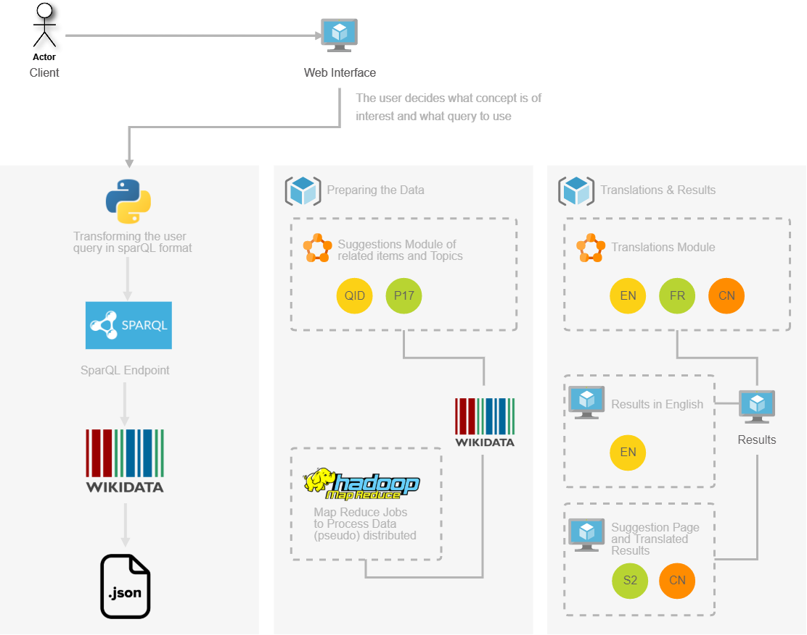
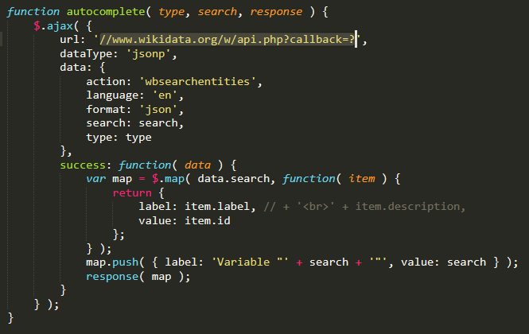
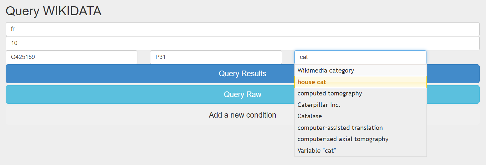
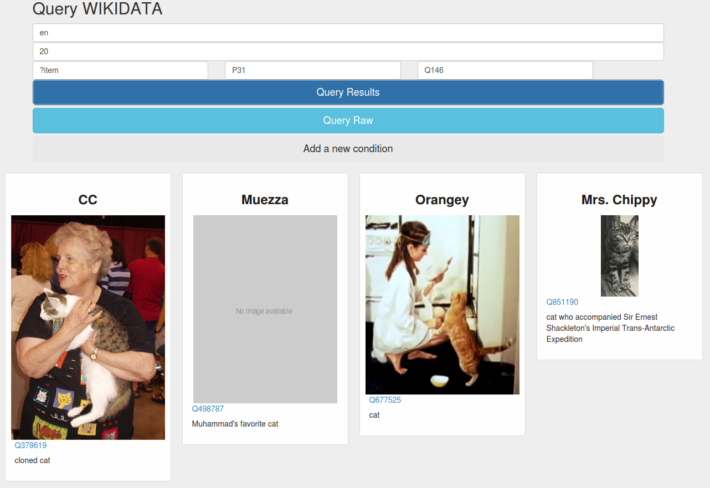
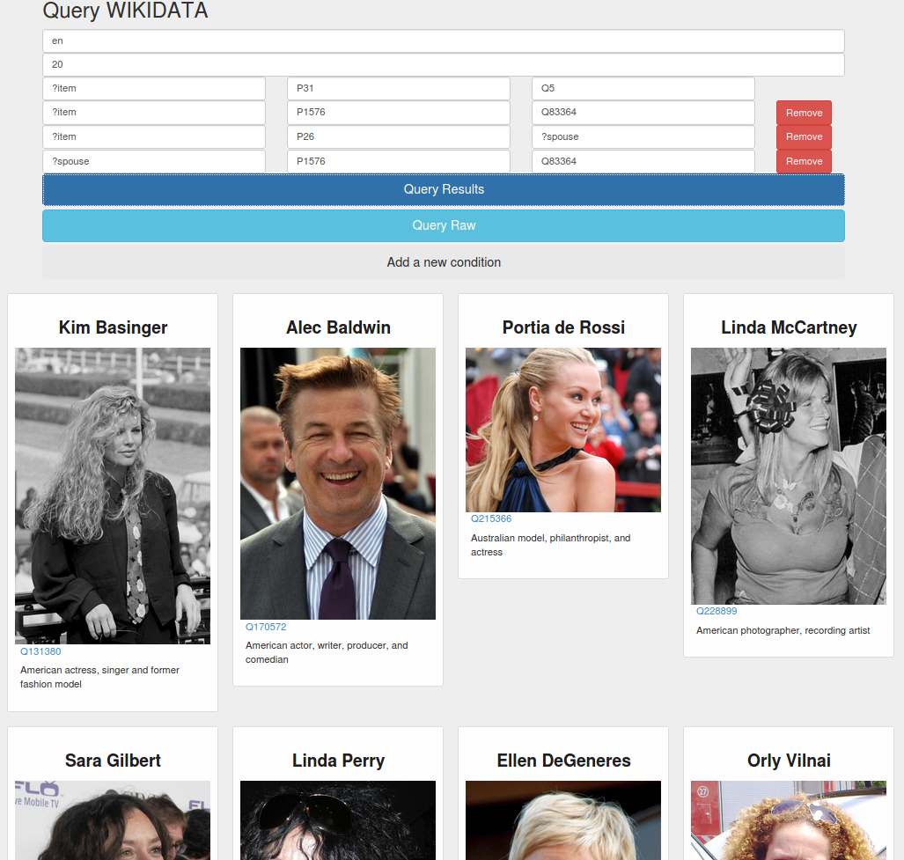
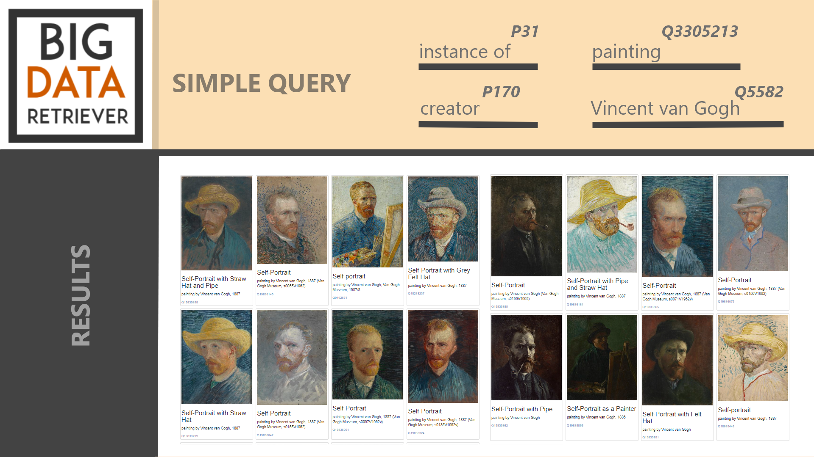
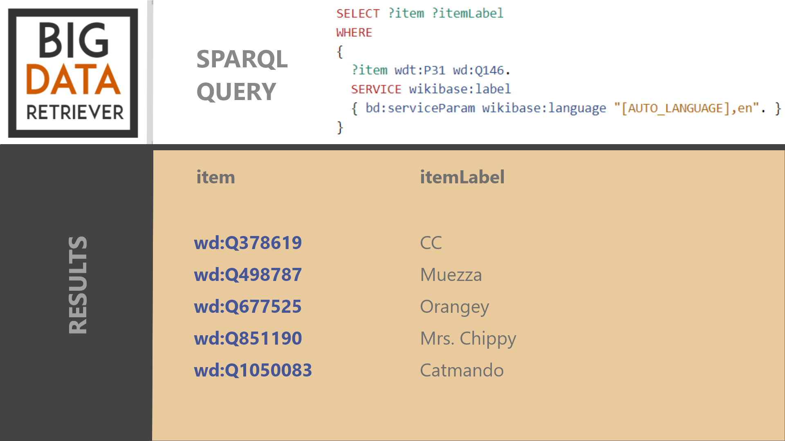

BIR - Big Data Retriever Scholarly HTML Technical Report
Authors
Andrei Palihovici, Student, M.Sc. in Distributed Systems
Ileana Popa, Student, M.Sc. in Software Engineering
Abstract
BIR- Big Data Retriever is a Web System that is able to query, compare, visualize, share,
summarize, large sets of data/knowledge and additional resources provided by Wikidata.
The platform will give the user access to everything that he finds of interest that is available
in the Wikidata collaboratively edited knowledge base, items and topics ranging from
1988 Summer Olympics, to love or Elvis Presley. Every item in this valuable collection of data is
uniquely identified by an unique number, making it possible for the concept to be translated without
favoring any language. The tool can for this reason easily recommend related information and similar
resources available in other languages. In the background, data will be processed in a distributed,
fast and reliable manner, using Hadoop MapReduce.
Architecture
The user connects to the Web Interface of the BIR project, where the topics can be chosen and a query is
generated, similarly with the tool here. After the user
describes the data he's interested in, this is transformed in a SPARQL query. Wikidata databases are queried
through the Sparql endpoint provided and the results are generated in JSON format.

Internal data structures/models
MapReduce
Hadoop distributes the data as it is initially stored in the system. Many nodes work in parallel,
each on their own part of the overall dataset. While preparing the data, extracting knowledge from it
and making relevant suggestions based on the user's interests, this Big Data approach can tackle problems
like Graph creation and analysis and Pattern Recognition that proves to be meaningful for
the problem at hand.
External Data Sources
Wikidata
Belonging to the Wikimedia family of websites, alongside the famous Wikipedia, Wikidata is a place that
stores structured data in many languages. The basic entity stored is an Item and can be a thing, a place,
a person, an idea or anything else. Each article from Wikipedia corresponds to a Wikidata Item, but there
are many Wikidata Items that have no Wikipedia pages associated to them.
All languages are treated the same way because Items are not identified by specific words, but by unique
identifiers prefixed with the letter Q, known as "QID". This allows the item to be translated without any
language bias. Also, some items named in the same way can have different meaning, thus being identified by different codes.
For example, Elvis Presley (Q303) represents the American singer and actor and Elvis Presley (Q610926) represents the self titled album.
Similarly to items, Wikidata stores a list of Statements associated to an item. Each statement has a Property and a Value, and the Property
has a generic identifier that starts with P instead of Q. For example the item Q1490 (Tokyo) has associated the value P17 that represents
"country" in English, "государство" in Russian and so on. The value P17(contry) for Q1490(Tokyo) is Q17(Japan).
Not all statement have to point to numeric values, for example one of the statements about Tokyo is the flag Q20900820, which points to an
image of the Flag of Tokyo Prefecture.
Data provided by Wikidata can transform into knowledge or interesting facts, as Amir E. Aharoni, that works at Wikimedia Foundation
pointed out in a Quora answer. In this article Buzzfeed came
up with a list of the 30 most famous people to die each year since 1900.
Code Examples
The service provided by Wikidata Query Service is used programatically from python by submitting requests to
https://query.wikidata.org/sparql, as shown in the code below. The requests module handles HTTP requests, runs a SPARQL query and can return the resulted
data in XML, CSV, JSON or BINARY RDF.
import requests
url = 'https://query.wikidata.org/sparql'
query = r"""
#Illustrates optional fields, instances of subclasses, language fallback on label service, date to year conversion
#Horses on Wikidata
SELECT DISTINCT ?horse ?horseLabel ?mother ?father (year(?birthdate) as ?birthyear) (year(?deathdate) as ?deathyear) ?genderLabel
WHERE
{
?horse wdt:P31/wdt:P279* wd:Q726 . # Instance et sous-classes de Q726-Cheval
OPTIONAL{?horse wdt:P25 ?mother .} # P25 : Mère
OPTIONAL{?horse wdt:P22 ?father .} # P22 : Père
OPTIONAL{?horse wdt:P569 ?birthdate .} # P569 : Date de naissance
OPTIONAL{?horse wdt:P570 ?deathdate .} # P570 : Date de décès
OPTIONAL{?horse wdt:P21 ?gender .} # P21 : Sexe
SERVICE wikibase:label { #BabelRainbow
bd:serviceParam wikibase:language "[AUTO_LANGUAGE],fr,ar,be,bg,bn,ca,cs,da,de,el,en,es,et,fa,fi,he,hi,hu,hy,id,it,ja,jv,ko,nb,nl,eo,pa,pl,pt,ro,ru,sh,sk,sr,sv,sw,te,th,tr,uk,yue,vec,vi,zh"
}
}
ORDER BY ?horse
"""
r = requests.get(url, params = {'format': 'json', 'query': query})
data = r.json()
print(data)

The wikidata api //www.wikidata.org/w/api.php?callback=? can be used to provide
an autocomplete functionality, such that the items and properties desired by the users
can be matched with existing wikidata numerical categories that will be connected further with the other
information searched.

Usecases
USECASE 1: Simple query - searching for a simple Item
subject-Item predicate-instance of (P31) object-house cat (Q146)
The user can enter all the necessary data on the default line displayed on the screen, in
which case the subject is the current Item. In this example, the predicate is instance of (P31)
and the object house cat (Q146).
subject-Item predicate-instance of (P31) object-house cat (Q146)

USECASE 2: Medium query - Searching for Paintings that are also Self-Portraits
subject-Item predicate-instance of (P31) object-painting (Q3305213)
subject-Item predicate-genre (P136) object-self-portrait (Q192110)
The user can add a new set of subject-predicate-object for more complex queries to
search for multiple properties.
The user can enter all the necessary data on the default line displayed on the screen, in
which case the subject is the current Item. In this example, the predicate is instance of (P31)
and the object house cat (Q146).
subjectpredicateobject
?iteminstance of (P31)
human (Q5)
?itemlifestyle (P1576) vegetarianism (Q83364)
?itemspouse (P26) ?spouse
?spouselifestyle (P1576) vegetarianism (Q83364)

User Interface
A limited number of classes and properties are currently not available from
schema.org. In most if not all cases it would be desirable to
make them available there, but while work is progressing it is simpler to define them
ourselves.


Conclusions and Improvement
Scholarly HTML would like to thank Scholarly HTML
(you read that right) for blazing the trail perhaps a few years too soon. Particularly,
the following people were particularly kind and helpful:
Peter Sefton,
Richard Smith-Unna, and
Peter Murray-Rust.
Dan Brickley was kind enough to drop by the office to chat about our usage of
schema.org even though he was tired and hungry. As
always, examples involving fish tanks are the most helpful. Dave Cramer shared ideas
that we happily stole.
Patrick Johnston’s input has been crucial, notably in modeling authoring. We can only
hope that getting those details exactly right have not caused him to lose too much
sleep.
We also received very useful feedback and pointers from: Kjetil Kjernsmo (DAHUT!),
Silvio Peroni, Justin Johansson, Alf Eaton, Raniere Silvia, Kaveh Bazargan and Mike
Smith. We are very much indebted to the help provided us by Ivan Herman.
If we somehow forgot you in this list and you are too gracious to complain, we love you
all the same.
{kind=link}